Hướng dẫn sử dụng Agent-Squad
Một đội agent AI (Claude Code, Codex, Gemini CLI) cùng làm một project cho bạn, điều khiển hoàn toàn từ một trang web trên máy. Bạn chỉ cần nhắn việc, bấm cho phép khi cần và xem kết quả.
1. Agent-Squad là gì
Thay vì một agent làm tất cả, Agent-Squad chia thành một đội:
.agents/tasks/T-1.md, T-2.md... ghi mục tiêu, file được sửa, kết quả. Đây là "sổ giao việc" chung của cả đội.http://localhost:7070: chat với từng agent, xem bảng task, cài đặt, thống kê token.Cách chia này tiết kiệm token: Lead chỉ đọc tóm tắt chứ không đọc code, mỗi worker chỉ đọc đúng phần việc của mình. Bạn có thể dùng model nhẹ cho Lead và model mạnh cho worker, hoặc trộn Claude với Codex.
2. Cài đặt lần đầu (Windows)
Agent-Squad chạy trong Ubuntu (WSL2) trên Windows. Các file cài đặt nằm trong thư mục windows\ của repo. Làm lần lượt:
- Double-click
windows\1-install-wsl.batđể cài WSL và Ubuntu. Xong thì khởi động lại máy, mở "Ubuntu" từ menu Start và đặt tên đăng nhập, mật khẩu Linux. - Double-click
windows\2-setup-tools.batđể cài công cụ trong Ubuntu (Node.js, git, tmux, Claude Code, Codex...). Nó sẽ hỏi mật khẩu Linux bạn vừa đặt. - Double-click
windows\3-login.batđể đăng nhập. Claude: làm theo hướng dẫn trên màn hình, xong gõ/exit. Codex: chọn "Sign in with ChatGPT", xong thì thoát. - Double-click
Agent-Squad.batở thư mục gốc. Dashboard mở thành một cửa sổ riêng.
windows\5-move-wsl-to-D.bat để chuyển cả Ubuntu (project, công cụ) sang D:\WSL\Ubuntu. Dữ liệu được giữ nguyên.3. Mở và cập nhật hằng ngày
- Mở: double-click
Agent-Squad.bat. File này tự tải bản mới trong Ubuntu rồi mở dashboard. - Cập nhật bản mới: trong dashboard bấm ⚙ Cài đặt › 🖥 Hệ thống › ⟳ Cập nhật, hoặc double-click
Update.bat. Agent đang chạy không bị ảnh hưởng. - Khởi động lại: ⚙ Cài đặt › 🖥 Hệ thống › ↻ Khởi động lại. Dashboard chạy thử bản mới trước; nếu bản mới lỗi thì giữ nguyên bản đang chạy.
C: hay D:. Từ Windows, mở thư mục Ubuntu bằng đường dẫn \\wsl$\Ubuntu\home\<tên bạn>.4. Project
Mỗi project là một thư mục làm việc, có đội agent và lịch sử chat riêng. Nhiều project chạy song song được. Chọn project ở ô trên cùng cột trái; bấm nút + bên cạnh để tạo hoặc thêm project.
| Loại | Dùng khi | Đặc điểm |
|---|---|---|
| 💻 Code (có git) | Viết phần mềm, game, web | Thư mục là repo git. Thư mục chưa có git thì dashboard tự tạo và lưu lần đầu. |
| 🗂 Điều hành (không git) | Quản lý nhiều thư mục, tài liệu, dữ liệu ở nơi khác trên máy | Thư mục chỉ chứa task và chat. Việc thật làm trong các "Tài nguyên" bạn khai báo. Có sẵn một agent tên git lo việc lưu và đẩy code. |
- Tạo project mới: chọn loại, đặt tên, viết mô tả ngắn (giúp agent hiểu project), chọn nơi đặt rồi bấm "Tạo project".
- Thêm project có sẵn: bấm "📁 Duyệt…" hoặc "🪟 Hộp thoại Windows" để chọn thư mục, hoặc gõ đường dẫn như
D:\Web\my-app. - File khung: nếu project thiếu
AGENTS.md,CLAUDE.md... thì trên cùng hiện dòng nhắc với nút "Tạo file khung" rồi "Commit file khung". Bấm lần lượt là xong; dashboard không ghi đè file có sẵn. - "Xoá khỏi danh sách" chỉ bỏ project khỏi dashboard, không xoá file nào trên máy.
5. Bắt đầu một việc
Khi project chưa chạy, khung giữa hiện màn hình "Bắt đầu thôi" kèm đội agent sẽ chạy.
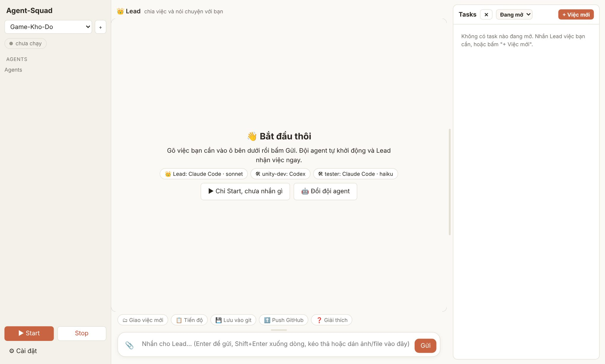
- Nhắn cho Lead việc bạn cần, bằng lời thường. Ví dụ: "Làm cho game một túi đồ 24 ô, có màn hình chọn vật phẩm và âm thanh khi nhặt đồ." Có thể dán hoặc kéo thả ảnh, file vào ô nhắn.
- Lead chia việc thành các task, giao cho worker và báo lại ngắn gọn. Task hiện ở cột phải.
- Worker làm. Bạn không cần theo dõi; khi task xong hoặc bị chặn, Lead tự đọc kết quả và báo bạn.
- Khi agent cần thêm quyền, chat hiện thẻ "Cần bạn cho phép". Bạn bấm Cho phép & làm tiếp (xem mục Agent xin quyền).
6. Màn hình chính
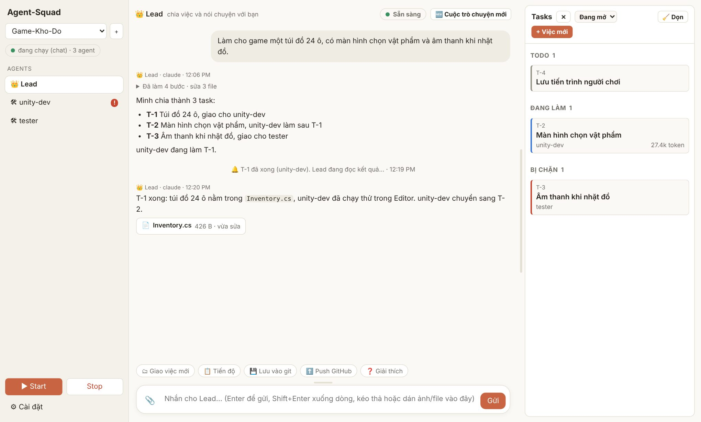
| Chỗ | Làm gì |
|---|---|
| Danh sách AGENTS | Bấm vào một agent để mở chat với agent đó. Dấu ! đỏ nghĩa là agent đang chờ bạn cho phép; chấm nhấp nháy nghĩa là đang làm. |
| ▶ Start / Stop | Bật hoặc tắt cả đội của project. Stop đóng cuộc trò chuyện đang mở của mọi agent (task và code giữ nguyên). |
| Sẵn sàng / Đang làm việc… | Trạng thái agent đang chọn. Khi đang làm có nút ⏹ Dừng (hoặc phím Esc trong ô nhắn) để dừng ngay lượt hiện tại. |
| 🆕 Cuộc trò chuyện mới | Xoá nội dung chat với agent này và bắt đầu lại. Agent giữ ghi chú tóm tắt và bộ nhớ chung; task và code không bị ảnh hưởng. |
| Thanh kéo | Kéo thanh giữa chat và Tasks để đổi độ rộng; kéo thanh trên ô nhắn để đổi chiều cao. Bấm đúp để về mặc định. |
Khung chat
- Mọi thao tác agent làm được gom thành một dòng như "Đã làm 4 bước · sửa 3 file". Bấm vào để xem từng bước, viết bằng lời; câu lệnh gốc chỉ hiện khi bạn bấm tiếp vào bước đó.
- Câu trả lời của agent Claude hiện dần khi agent đang viết. Codex và Gemini hiện khi xong từng đoạn.
- Ảnh và file agent nhắc tới hoặc vừa sửa hiện thành thẻ trong chat. Bấm để xem ở cột phải hoặc tải về.
- Khi chọn một worker, nút gợi ý đổi thành 🔎 Đang làm gì?, ▶ Làm tiếp, ⏸ Dừng lại. Bạn nhắn thẳng cho worker được; nếu bạn đổi yêu cầu, worker sẽ ghi lại vào task để Lead biết.
Bảng Tasks
- Task chia theo trạng thái: Todo, Sẵn sàng, Đang làm, Bị chặn, Xong. Mỗi thẻ ghi người làm và số token đã dùng cho task đó.
- Ô lọc: Đang mở (mặc định), Tất cả, Bị chặn, Đã xong. 🧹 Dọn cất các task đã xong vào kho lưu trữ cho gọn.
- + Việc mới: "Nhờ lead chia việc" (mô tả, Lead tự chia) hoặc "Tự giao cho 1 worker" (bạn viết task và chọn người làm).
- Bấm vào thẻ để xem, sửa, giao lại hoặc xoá task. Nút ✕ cạnh chữ Tasks ẩn cột này cho chat rộng hơn.
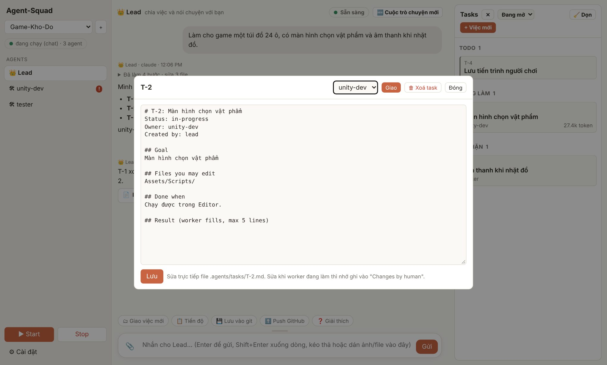
Agent xin quyền
Mặc định agent chỉ được sửa file trong project và chạy lệnh an toàn (xem file, git trên máy, lệnh kiểm tra). Khi cần hơn thế, agent dừng lại và hỏi bạn:
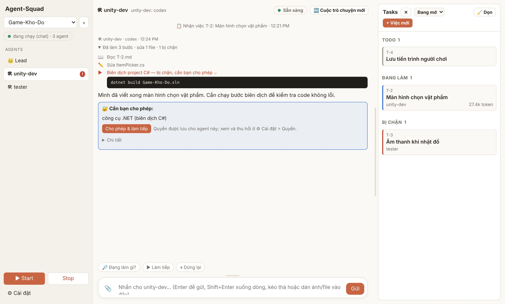
- Quyền được nhớ cho agent đó. Xem và thu hồi ở ⚙ Cài đặt › 🔐 Quyền.
- Agent-Squad không có chế độ bỏ qua mọi quyền. Những việc như đẩy code lên GitHub luôn cần bạn bấm.
- Agent cũng có thể xin tạo thêm agent cấp dưới; dashboard hiện thẻ "Cho phép tạo" hoặc "Từ chối".
Khi agent gặp lỗi
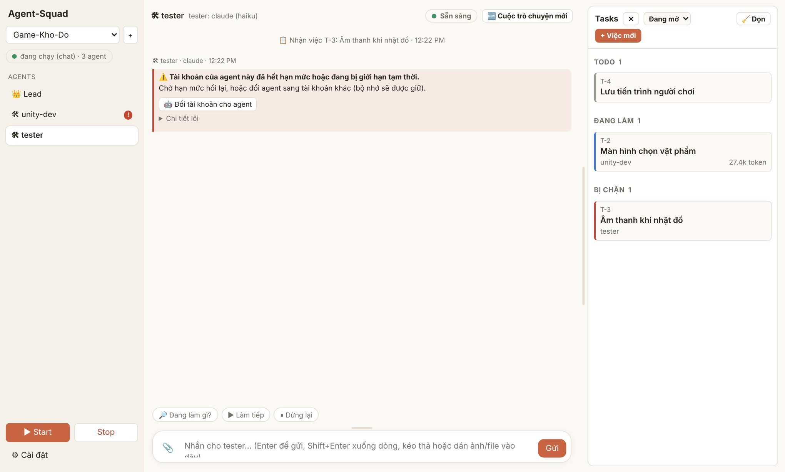
| Thẻ lỗi nói | Bạn làm |
|---|---|
| Hết hạn mức hoặc bị giới hạn tạm thời | Chờ hạn mức hồi lại, hoặc đổi agent sang tài khoản khác (Tài khoản). |
| Chưa đăng nhập hoặc hết phiên | Đăng nhập lại: chạy 3-login.bat, hoặc dùng dòng lệnh trong tab Tài khoản. |
| Chưa cài công cụ của agent | Chạy lại 2-setup-tools.bat. |
| Không kết nối được mạng | Kiểm tra mạng rồi nhắn lại để agent làm tiếp. |
| Model không dùng được | Đổi model trong Đội agent. |
| Cuộc trò chuyện quá dài | Bấm 🆕 Cuộc trò chuyện mới; agent đọc lại ghi chú và làm tiếp. |
Xem file và thay đổi
Bấm vào thẻ file trong chat để mở file ở cột phải (thay chỗ Tasks). File .md hiện như tài liệu, ảnh hiện cỡ lớn. Bấm ✕ để quay về Tasks.
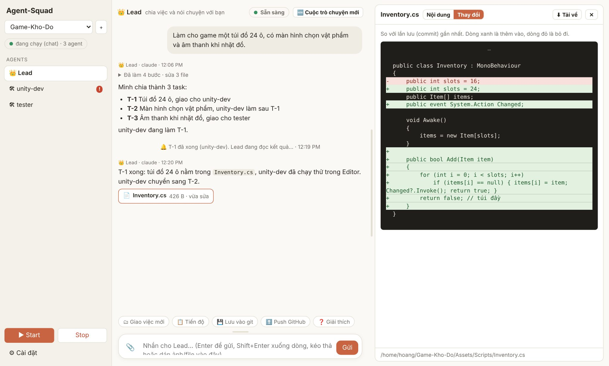
7. Cài đặt
Mọi cài đặt nằm trong nút ⚙ Cài đặt ở góc dưới cột trái, chia thành các tab bên trái.
🤖 Đội agent
Trước khi Start, tab này là bảng chọn Lead và các worker: tên, hãng (Claude Code, Codex, Gemini CLI), model, effort.
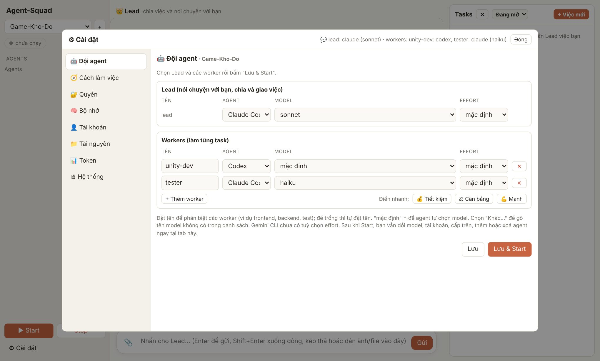
- Đặt tên worker theo việc (ví dụ
unity-dev,tester,frontend) để Lead giao đúng người. - "mặc định" là để agent tự chọn model. Chọn "Khác…" để gõ tên model không có trong danh sách.
- Effort càng cao agent nghĩ càng kỹ và càng tốn token.
Khi đang chạy, tab này là danh sách agent thật, thay đổi có hiệu lực ngay và được nhớ cho lần Start sau:
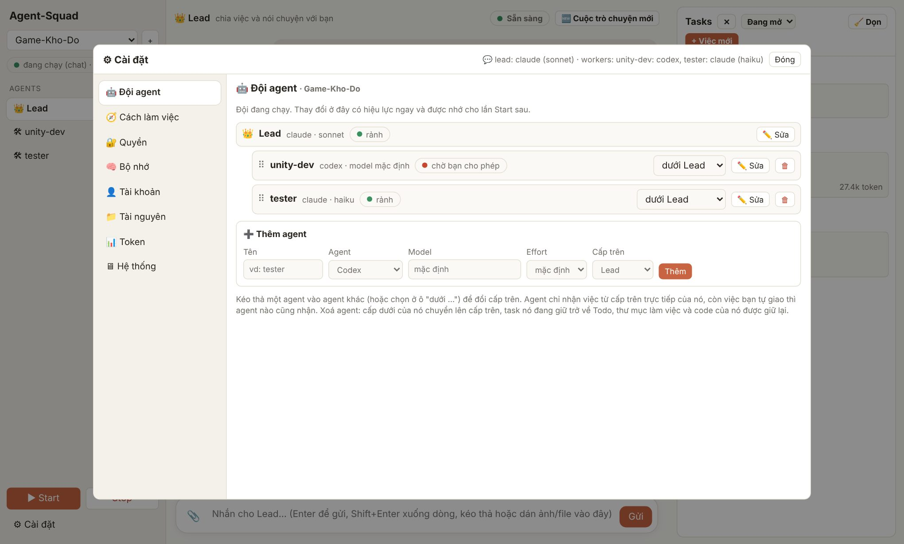
- Đổi model hoặc tài khoản thì agent bắt đầu cuộc trò chuyện mới. Mặc định agent ghi bộ nhớ trước khi đổi và đọc lại sau đó, nên không mất việc đang làm.
- Xoá agent: cấp dưới chuyển lên cấp trên, task agent đang giữ trở về Todo, code được giữ lại.
- Muốn đổi sang hãng khác (Claude sang Codex chẳng hạn) thì xoá rồi thêm agent mới.
🧭 Cách làm việc
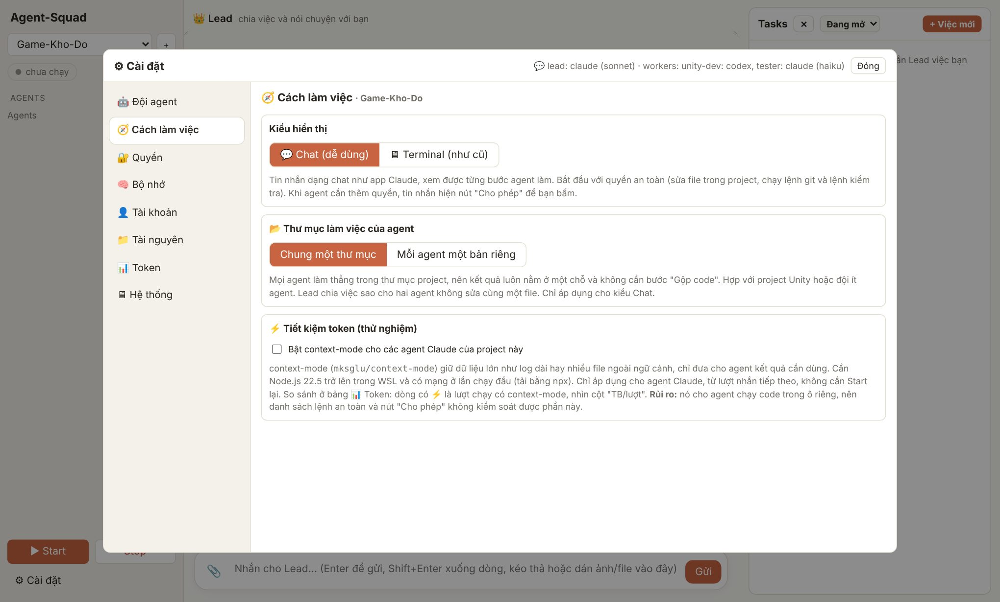
- Kiểu hiển thị: 💬 Chat (khuyên dùng) như ảnh trong tài liệu này; 🖥 Terminal hiện màn hình dòng lệnh của từng agent như bản cũ. Đổi kiểu thì Stop rồi Start lại.
- Thư mục làm việc của agent (project Code):
- Chung một thư mục (mặc định): mọi agent làm thẳng trong thư mục project, kết quả luôn ở một chỗ, không cần bước "Gộp code". Hợp với Unity hoặc đội ít agent.
- Mỗi agent một bản riêng: mỗi worker có một bản sao trong thư mục
<project>-agents/; làm xong phải "Gộp code" thì kết quả mới về thư mục chính.
- ⚡ context-mode (thử nghiệm, tắt mặc định): giúp agent Claude không phải đọc hết các dữ liệu lớn. Đọc kỹ cảnh báo trước khi bật, vì phần này nằm ngoài nút "Cho phép".
🔐 Quyền
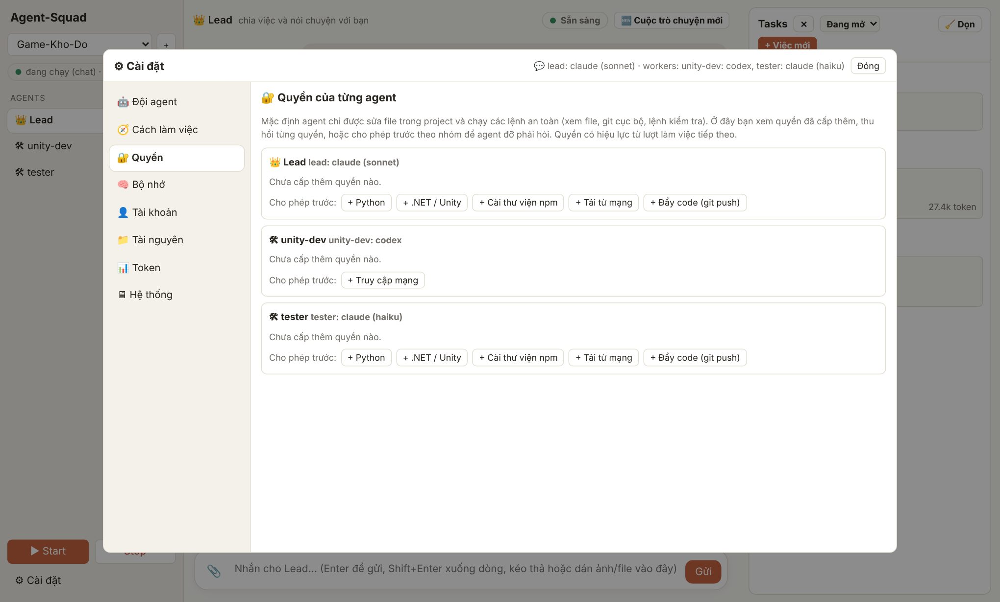
Nhóm cho phép trước: Python, .NET / Unity, Cài thư viện npm, Tải từ mạng, Đẩy code (git push). Với Codex chỉ có Truy cập mạng. Cho phép trước giúp agent đỡ phải dừng lại hỏi.
🧠 Bộ nhớ
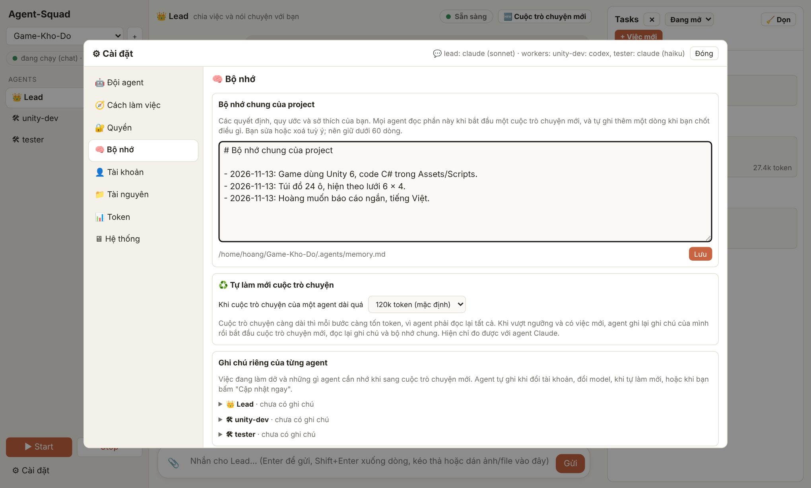
- Bộ nhớ chung (
.agents/memory.md): quyết định, quy ước, sở thích của bạn. Mọi agent đọc phần này khi bắt đầu cuộc trò chuyện mới, và tự ghi thêm một dòng khi bạn chốt điều gì. Bạn sửa trực tiếp được; nên giữ dưới 60 dòng. - Tự làm mới cuộc trò chuyện: cuộc trò chuyện càng dài thì mỗi bước càng tốn token. Khi vượt ngưỡng (mặc định 120k token) và có việc mới, agent ghi ghi chú rồi làm việc đó trong cuộc trò chuyện mới. Hiện chỉ đo được với agent Claude.
- Ghi chú riêng của từng agent (
.agents/handoff/<tên>.md): việc đang dở. Bấm "💾 Cập nhật ngay" để agent viết lại bất cứ lúc nào.
👤 Tài khoản
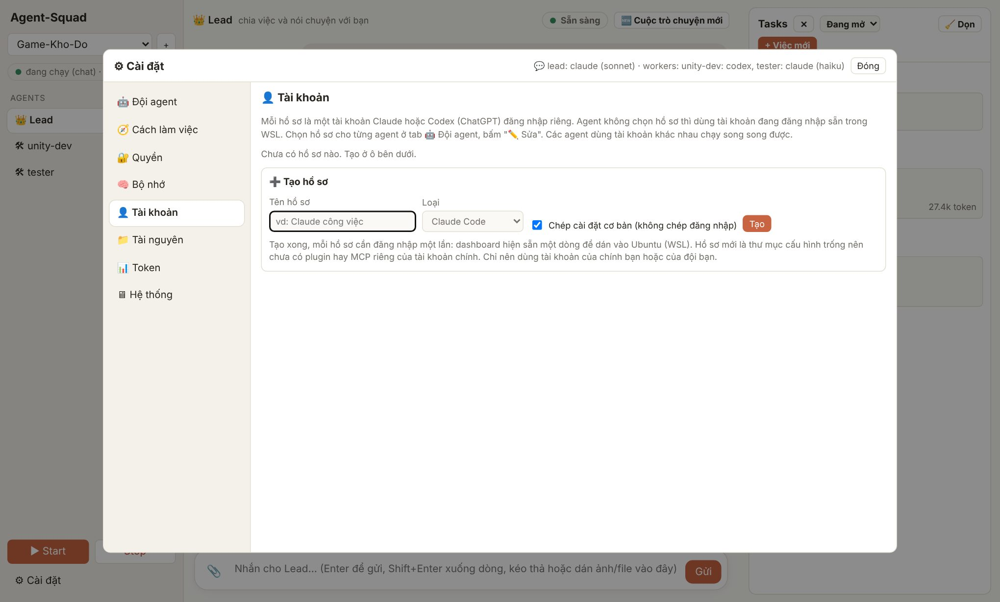
Tạo nhiều hồ sơ đăng nhập Claude hoặc Codex (ChatGPT), mỗi hồ sơ một tài khoản. Tạo xong, dashboard hiện sẵn một dòng lệnh để dán vào Ubuntu và đăng nhập một lần. Sau đó chọn hồ sơ cho từng agent ở Đội agent › ✏️ Sửa. Các agent dùng tài khoản khác nhau chạy song song được, hữu ích khi một tài khoản hết hạn mức. Chỉ dùng tài khoản của bạn hoặc của đội bạn.
📁 Tài nguyên
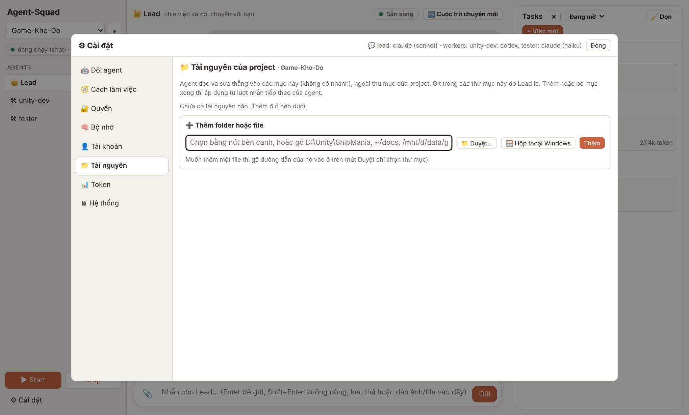
Thêm folder hoặc file nằm ngoài project mà agent cần đọc và sửa tại chỗ, ví dụ D:\Unity\ShipMania. Áp dụng từ lượt nhắn tiếp theo. Nếu nhận ra project Unity (có Assets và ProjectSettings), dashboard dặn agent không đụng Library, Temp và giữ file .meta, và có nút tạo .gitignore cho Unity.
📊 Token
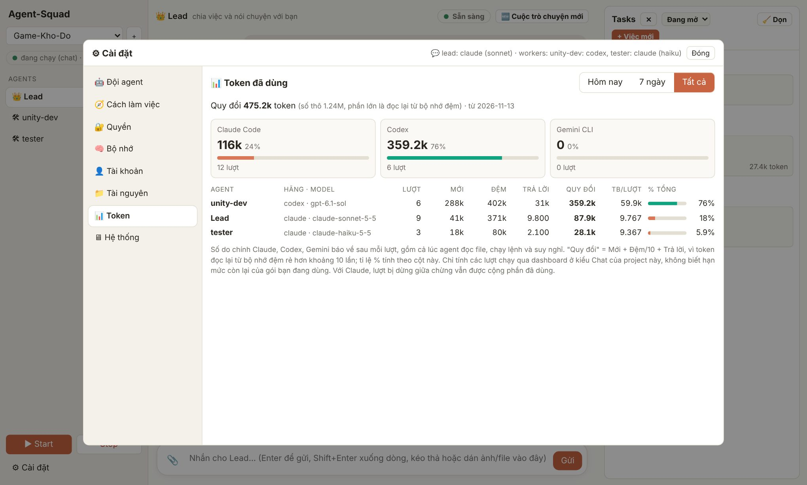
- Số do chính Claude, Codex, Gemini báo về sau mỗi lượt, gồm cả lúc agent đọc file, chạy lệnh và suy nghĩ. Xem theo Hôm nay / 7 ngày / Tất cả.
- Mới: token đọc lần đầu. Đệm: token đọc lại từ bộ nhớ đệm (rẻ hơn khoảng 10 lần). Trả lời: token agent viết ra.
- Quy đổi = Mới + Đệm/10 + Trả lời; tỉ lệ % tính theo cột này. TB/lượt là trung bình mỗi lượt.
- Dashboard không biết hạn mức còn lại của gói bạn đang dùng.
🖥 Hệ thống
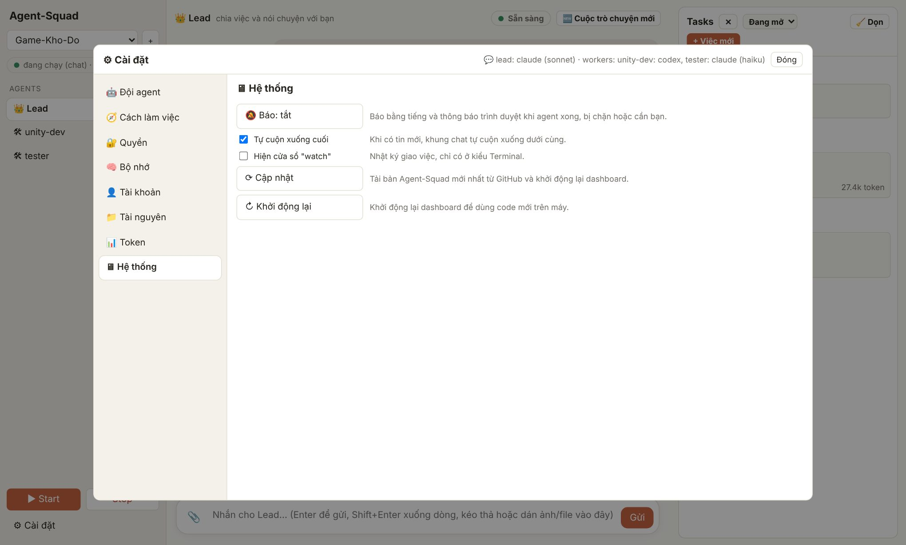
- 🔔 Báo: bật tiếng và thông báo khi task xong, bị chặn, agent cần quyền hoặc Lead trả lời xong.
- Tự cuộn xuống cuối và cửa sổ "watch" (chỉ kiểu Terminal).
- ⟳ Cập nhật và ↻ Khởi động lại (xem mục 3).
8. Mẹo tiết kiệm token
- Nhắn một lần, đủ ý. Mỗi tin nhắn là một lượt của Lead. Gom yêu cầu lại thay vì nhắn nhiều tin nhỏ.
- Lead dùng model nhẹ. Lead chỉ chia việc và đọc tóm tắt; bấm "💰 Tiết kiệm" hoặc "⚖ Cân bằng" trong Đội agent.
- Cho phép trước các nhóm quyền hay dùng để agent không phải dừng lại rồi chạy lại.
- Giữ bộ nhớ chung ngắn gọn: nó được đọc ở đầu mọi cuộc trò chuyện mới.
- Bấm 🆕 Cuộc trò chuyện mới khi chuyển sang việc khác hẳn; cuộc trò chuyện dài thì mỗi bước đều đắt hơn.
- Dashboard đã tự làm sẵn: chép kết quả task vào tin báo cho Lead (Lead không phải mở file), gộp nhiều task xong cùng lúc vào một lượt, tự làm mới cuộc trò chuyện quá dài.
- Xem cột "token" trên thẻ task để biết việc nào tốn nhất.
9. Hỏi đáp và sự cố
Dashboard không mở được
Mở cửa sổ "Agent-Squad server" trên taskbar để xem lỗi. Nếu đã đóng nó, double-click lại Agent-Squad.bat. Lỗi "dashboard không chạy sau 40 giây" thường do Ubuntu chưa khởi động xong; thử lại lần nữa.
Agent không làm gì sau khi tôi nhắn
Xem trạng thái ở đầu khung chat. Nếu có dấu ! đỏ ở tên một agent, agent đó đang chờ bạn cho phép. Nếu đang "Đang làm việc…" quá lâu, bấm ⏹ Dừng rồi nhắn lại. Nếu "chưa chạy", bấm ▶ Start hoặc gửi tin để tự khởi động.
Task cứ nằm ở "Bị chặn"
Bấm vào thẻ task, đọc phần "Notes / questions": worker ghi lý do ở đó (thiếu file, cần quyết định...). Trả lời bằng cách nhắn cho Lead hoặc nhắn thẳng worker, rồi bấm "▶ Làm tiếp".
Code của worker không thấy trong thư mục project
Bạn đang dùng "Mỗi agent một bản riêng". Nhắn Lead "Gộp code" (hoặc bấm gợi ý 🔀 Gộp code), hoặc chuyển sang "Chung một thư mục" trong Cách làm việc.
Hết hạn mức giữa chừng
Tạo thêm hồ sơ ở tab Tài khoản, rồi đổi tài khoản cho agent đó ở Đội agent. Agent ghi bộ nhớ trước khi đổi; nếu không ghi được, dashboard lấy phần cuối lịch sử chat thay thế.
Agent quên những gì đã thống nhất
Ghi điều đó vào Bộ nhớ chung (tab Bộ nhớ), hoặc nói với Lead "ghi nhớ: …". Mọi agent đọc phần này khi bắt đầu cuộc trò chuyện mới.
Có xoá được file của tôi không?
Agent sửa được file trong project và trong Tài nguyên bạn khai báo. Lệnh nguy hiểm hơn (đẩy code, cài thư viện, tải từ mạng...) cần bạn bấm cho phép. Nên dùng git và lưu thường xuyên (gợi ý "💾 Lưu vào git") để quay lại được bất cứ lúc nào.
10. Phụ lục
File và thư mục trong project
| Đường dẫn | Nội dung |
|---|---|
AGENTS.md | Quy tắc chung cho mọi agent. |
CLAUDE.md | Quy tắc thêm cho Lead. |
.agents/tasks/T-*.md | File task. Mẫu: _template.md. |
.agents/memory.md | Bộ nhớ chung. |
.agents/handoff/<tên>.md | Ghi chú riêng của từng agent. |
.agents/chat/ | Lịch sử chat và thống kê token (usage.json). |
.agents/uploads/ | Ảnh, file bạn đính kèm (tối đa 20 MB mỗi file). |
.agents/hierarchy.txt | Ai là cấp trên của ai. |
~/.agent-squad/ | Danh sách project và hồ sơ tài khoản (trong Ubuntu). |
dashboard/catalog.json | Danh sách model và effort hiện trong bảng chọn. |
Một task trông như thế nào
# T-2: Màn hình chọn vật phẩm Status: in-progress (todo, ready, in-progress, blocked, done) Owner: unity-dev Created by: lead Parent: none ## Goal ## Files you may edit ## Context (link files, do not paste) ## Done when (checks to run) ## Notes / questions ## Changes by human ## Result (worker fills, max 5 lines)
Lead giao việc bằng cách đặt Owner và Status: ready; dashboard tự gọi worker. Worker đặt Status: done hoặc blocked khi xong, dashboard tự báo cấp trên.
Chạy bằng dòng lệnh (không cần dashboard)
Dành cho người quen terminal, trong Ubuntu:
scripts/start-agents.sh LEAD="claude@sonnet" WORKERS="unity-dev=codex claude@opus#high" scripts/start-agents.sh tmux attach -t agents
Mỗi agent viết dạng [tên=]hãng[@model][#effort]. Giao task: scripts/assign.sh T-3 unity-dev.
Tài liệu cho Agent-Squad bản tháng 11/2026. Ảnh chụp từ một project mẫu; giao diện trên máy bạn có thể khác đôi chút.